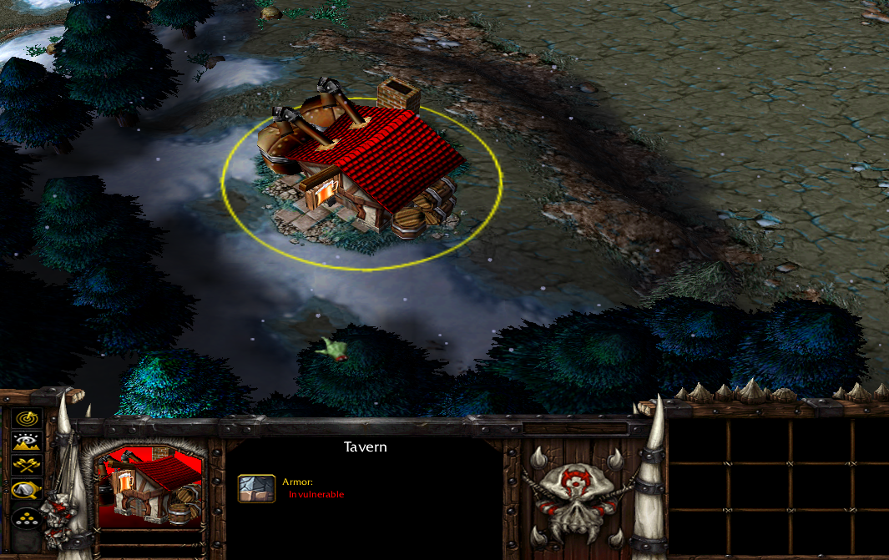
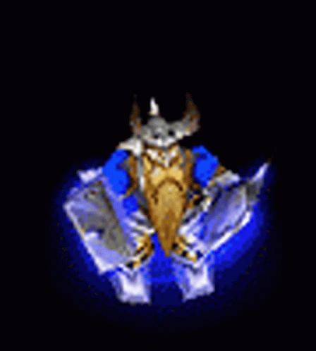
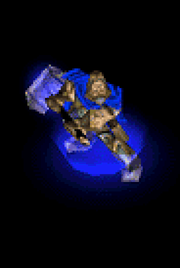
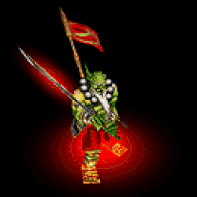
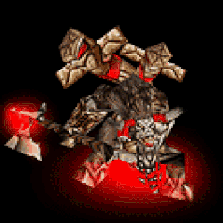
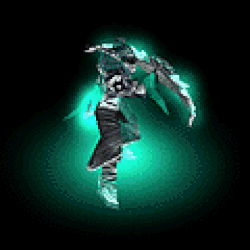
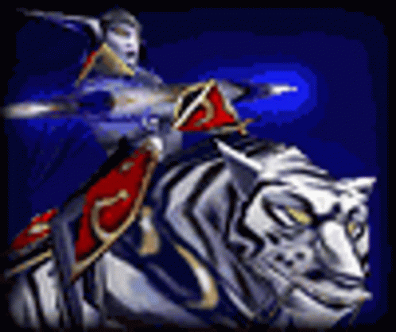
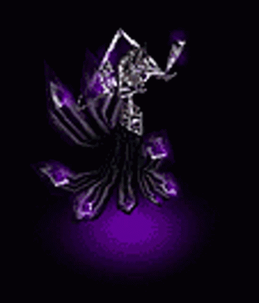
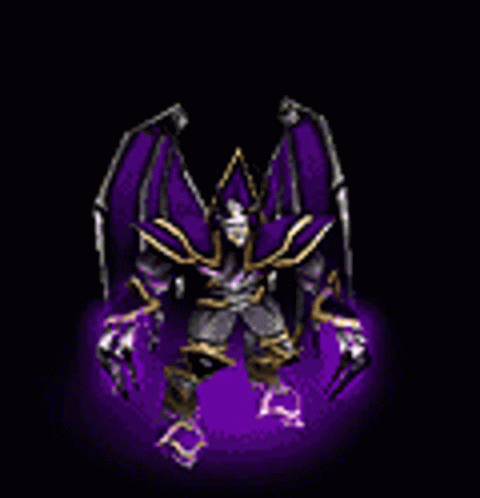

Warcraft 3 is an Real Time Strategy game that today comes in 2 flavors(Reign Of Chaos and The Frozen Throne). Released for the 1st time back in July 2002, the first version of Warcraft 3 was the "Reign Of Chaos" pack. Exactly 1 year later on 1st July 2003 was released the today infamous and alot more well known new package of Warcraft 3 "The Frozen Throne". The developers and owners of Warcraft III are Blizzard Entertainment who are more famous for their other more popular games such as: World Of Warcraft, Starcraft II, the Diablo franchise, Hearth Stone and Overwatch, to name a few, as well as many more projects they've worked on alone or in partnership with other bigger game development companies.
Over the years, Warcraft 3 has gained an incredible fanbase, and alot of fanmade "mods" or "modes" have been created causing an evolution of the game and changing the course of Warcraft 3. Initially, the 1st Warcraft 3 Reign Of Chaos mods were the now(and probabbly then) known classical mods, which were the 1st maps made by Blizzard themselves and packet into the Reign Of Chaos package. They were the "classic" strategy mods, where players had a choice of 4 races/classes: human, night elf, orc and undead.
With the release of The Frozen Throne, new maps were added to Warcraft. The new version of Warcraft III included both RoC and TFT game flavors, and an additional specific for the game map creation tool was added, the players were now able to create custom maps, add them to the game and play them. There are a lot of fan made maps and mods available on the internet, most(if not all) of the websites from where you can download them are made by the Warcraft community and player/fanbase. Here are 2 of the most popular sites to download custom Warcraft III maps: hive epicwar
Each race has it's strengths and weaknesses, depending on the matchup, a race is "better"
against 1 race and weak against another.
Each race is composed of different types of units and buildings with various different designs.
The aim in the classical mod is to destroy all the enemy's buildings(though in some mods you have
to destroy all enemy buildings as well as all of their units).
The players can build an army of up to 100 "food", though different units take less or more food.
For example, the "worker" units take 1 food each, however, units such as knights(human units) take
4 food, fiends(undead) take 3, grunts(orc) take 3, archers(night elf) 2.
There are a lot of units in the game, but the most important ones are the hero units.
There is a total of 16 heroes available(depending on the class you play, 4 of them are from that class).
These are the "classic" heroes, but TFT also includes special "tavern heroes", which you can get form the
"tavern".
The players can have up to 3 heroes in their army.
The classic heroes can only be used by players who play the race of those heroes, for example:
humans: Archmage, Mountain King, Paladin, Blood Mage
night elf heroes: Keeper Of The Groove, Demon Hunter, Priestess Of The Moon, Warden
orc: Far Seer, Blade Master, Tauren Chieftain, Shadow Hunter
undead: Death Knight, Lich, Dread Lord, Creep Lord
Tavern Heroes on the other hand can be used no matter what race the player is playing.
With so many classic + Tavern heroes, we are going to cover just the classic heroes for each race briefly: The rest you can read about on the more extensive and indepth warcraft 3 community and fanmade websites, wowpedia being one of the best places for that, along side the numerous other units each race offers a s well as their buildings and even items and all other info about Warcraft III.
Archmage:
Mystical hero adept at ranged assults. Can learn Blizzard, summon Water Elemental, Briliance Aura and
Mass Teleportation
Mountain King:
Warrior hero adept at offensive combat and disrupting enemy troops. Can learn Strom Bolt, Clap, Bash,
and Avatar

Paladin:
Warrior hero, adept at defence and augmenting nearby friendly troops. Can learn Holy Light, Divine
Shield,
Devotion Aura and Resurrection

Blood Mage:
Mystical hero, adept at controlling magic and ranged assults. Can learn Flame Strike,
Banish, Siphon Mana and Phoenix
Far Seer:
Mysical hero, adept at ranged attacks and scouting. Can learn Chain Lightning, Far Sight, Feral Spirit
and Earthquake
Blade Master:
Cunning hero, adept at quickly killing individual units and creating confusion among enemies. Can learn
Mirror Image, Wind Walk, Critical Strike and Blade Storm

Tauren Chieftain:
Warrior hero, exceptional at absorbing damage and melee combat. Can learn Shocwave, War Stomp, Endurance
Aura
and Reincarnation

Shadow Hunter:
Cunning hero, adept at healing magics and voodoo curses. Can learn Healwave, Hex, Serpent Ward
and Big Bad Voodoo
Keeper Of The Groove:
Mystical hero, adept at using nature spells. Can learn Entangling Roots,
Force of Nature, Thorns Aura and Tranquility
Demon Hunter:
Cunning hero, adept at maneuvering through battles. Can learn Immolasion,
Evasion, Mana Burn and Metamorphosis

Priestess Of The Moon:
Warrior Hero, adept at enchancing ranged attacks and slaying enemies from afar. Can learn Scout,
Searing Arrows, Trueshot Aura and Starfall

Warden:
Cunning hero, adept at entering and escaping combat. Can learn Blink,
Fan of Knifes, Shadow Strike and Vengence
Death Knight:
Warrior hero, evil counterpart of human Paladin. Can learn Death Coil, Death Pact, Unholy Aura and
Animate Dead
Lich:
Mystical hero, particularly adept at cold magic. Can learn Frost Nova, Frost Armour, Dark Ritual and
Death and Decay

Dread Lord:
Warrior hero, adept at controlling combat. Can learn Carrion Swarm, Sleep, Vampiric Aura and Inferno

Creep Lord:
Warrior hero, adept at summoning insect minions and crushing enemies. Can learn Impale, Spiked Carapace
Carrion Beetles and Locust Swarm